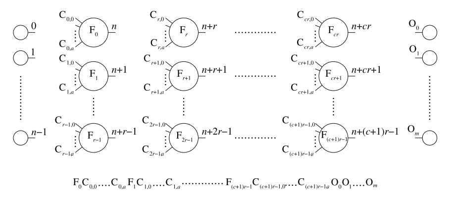
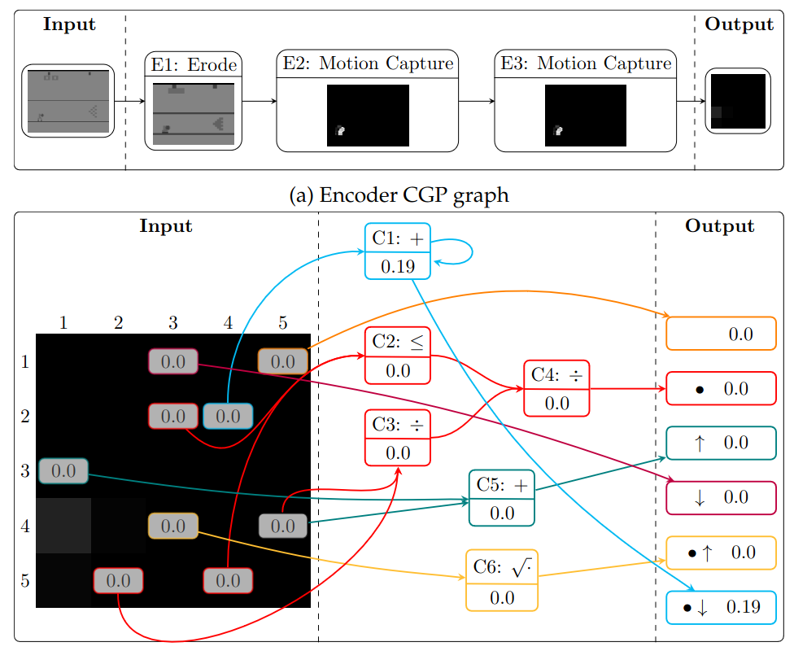

Evolutionary Methods
for Interpretable Control
Dennis G. Wilson
EvoRL Workshop
GECCO 2023
Policy search in critical applications
Wilson D, et al. "Learning Robust and Readable Control Laws for Aircraft Taxi Control." Under
review.
Autonomous Vehicles
Atakishiyev, Shahin, et al. "Explainable artificial intelligence for autonomous driving: A
comprehensive overview and field guide for future research directions." arXiv preprint
arXiv:2112.11561 (2021).
How to train your policy

Representation:
Neural network
Optimization:
Objective:
\[\begin{aligned} f(\pi_\theta) = \sum_t^T \gamma^t R(s_t, \pi_\theta(s_t)) \end{aligned} \]
Neural network
Optimization:
- Value function approximation
- Policy gradient
- Direct policy search
Objective:
\[\begin{aligned} f(\pi_\theta) = \sum_t^T \gamma^t R(s_t, \pi_\theta(s_t)) \end{aligned} \]
Mao, Hongzi, et al. "Resource management with deep reinforcement learning." Proceedings of the
15th ACM workshop on hot topics in networks. 2016.
Explaining Neural Networks
Kim, Jinkyu, and John Canny. "Interpretable learning for self-driving cars by visualizing causal
attention." Proceedings of the IEEE international conference on computer vision. 2017.
The problem with explaining

Attention maps and feature importance analysis explain what information is being used, not how.
Rudin, Cynthia. "Stop explaining black box machine learning models for high stakes decisions and
use interpretable models instead." Nature machine intelligence 1.5 (2019): 206-215.
The many forms of explanation
Evolution can optimize control policies which are interpretable by design.
Zhou, Ryan, and Ting Hu. "Evolutionary approaches to explainable machine learning." arXiv
preprint arXiv:2306.14786 (2023).
How to get interpretable policies
Start with a good neural network policy and imitate it.
Predict expert action as a classification problem.
Delgado, Juan, et al. "Robotics in construction: A critical review
of the reinforcement learning and imitation learning paradigms." Advanced Engineering
Informatics 54 (2022): 101787.
Imitation with Decision Trees
Pong inputs extracted from raw images:
ball position $(x, y)$ and velocity $(v_x , v_y)$
player paddle position $y_p$ , velocity $v_p$, acceleration $a_p$, and jerk $j_p$.
Bastani, Osbert, Yewen Pu, and Armando Solar-Lezama. "Verifiable reinforcement learning via
policy extraction." Advances in neural information processing systems 31 (2018).
Imitation with Decision Trees
Application to 10x10 visual area around Mario.
Coppens, Youri, et al. "Distilling deep reinforcement learning policies in soft decision trees."
Proceedings of the IJCAI 2019 workshop on explainable artificial intelligence. 2019.
Imitation with Functional Trees

Model-based and model-free symbolic regression (genetic programming)
Hein, Daniel, et al. "Interpretable policies for reinforcement
learning by genetic programming." Engineering Applications of Artificial Intelligence 76 (2018):
158-169.
Imitation with Programs
Similar to grammatical evolution with mutation function "neighborhood_pool"
Verma, Abhinav, et al. "Programmatically interpretable reinforcement learning." International
Conference on Machine Learning. PMLR, 2018.
Generating Policy Programs
Landajuela, Mikel, et al. "Discovering symbolic policies with deep reinforcement learning."
International Conference on Machine Learning. PMLR, 2021.
Generation > Imitation
Generated policies, boosted by an expert policy, outperform imitation.
Landajuela, Mikel, et al. "Discovering symbolic policies with deep reinforcement learning."
International Conference on Machine Learning. PMLR, 2021.
Direct search
for interpretable policies
Get reward by looking for reward.
You don't have to use neural networks.
K.I.S.S.
Functional trees as policies
Miranda, Ícaro, et al. "A Comparison Study Between Deep Learning and Genetic Programming
Application in Cart Pole Balancing Problem." 2018 IEEE Congress on Evolutionary Computation
(CEC). IEEE, 2018.
Interpretable Policies competitive with Deep RL
Videau, Mathurin, et al. "Multi-objective genetic programming for explainable reinforcement
learning." European Conference on Genetic Programming. 2022.
GP for eXplainable RL
def swingup(s):
return [s[4] + s[3]*6.614633680991087 - s[2] + np.exp(if_then_else(s[3]>-0.7571072906634332, s[1], \
15.013603569678889*s[1]))]
def hopper(s):
return [np.sin(np.exp(s[8])), -6.257060739725605*(s[7] + np.sin(s[3]+s[7])), \
np.sin(np.sin(s[7])-np.sin(s[8])-s[10]*(s[1]-np.log(abs(s[8]*s[3])+0.0001) - 5.860219777510614))]
Videau, Mathurin, et al. "Multi-objective genetic programming for explainable reinforcement
learning." European Conference on Genetic Programming. 2022.
Linear GP
Very simple to implement and uses standard GA.
Kantschik, Wolfgang, and Wolfgang Banzhaf. "Linear-graph GP-a new GP structure." European
Conference on Genetic Programming. Berlin, Heidelberg: Springer Berlin Heidelberg, 2002.
Brameier, Markus, Wolfgang Banzhaf, and Wolfgang Banzhaf. Linear genetic programming. Vol. 1. New York: Springer, 2007.
Brameier, Markus, Wolfgang Banzhaf, and Wolfgang Banzhaf. Linear genetic programming. Vol. 1. New York: Springer, 2007.
Programs as Policies
Program synthesis using continuous optimization over a latent program space.
Trivedi, Dweep, et al. "Learning to synthesize programs as interpretable and generalizable
policies." Advances in neural information processing systems 34 (2021): 25146-25163.
Weight Agnostic Neural Networks
Parameter-free functional graph.
Gaier, Adam, and David Ha. "Weight agnostic neural networks." Advances in neural information
processing systems 32 (2019).
Cartesian Genetic Programming
A graph-based GP method based on functional node indexing with Cartesian coordinates.
Miller, Julian Francis. "Cartesian genetic programming: its status and future." Genetic
Programming and Evolvable Machines 21 (2020): 129-168.
Floating Point Cartesian Genetic Programming
Modern CGP uses a linear representation and a single index per node.
Wilson, Dennis G., et al. "Positional cartesian genetic programming." arXiv preprint
arXiv:1810.04119 (2018).
Graph-based policies
Reward of 7000, similar to PPO and SAC.
Graph-based policies
Reward of 20000 - 40000 (but no termination criteria)
Critical applications: Airplane taxi
Wilson D, et al. "Learning Robust and Readable Control Laws for Aircraft Taxi Control." Under
review.
Critical applications: Airplane taxi

Policy:
Wilson D, et al. "Learning Robust and Readable Control Laws for Aircraft Taxi Control." Under
review.
Arcade Learning Environment
Bellemare, Marc G., et al. "The arcade learning environment: An evaluation platform for general agents." Journal of Artificial Intelligence Research 47 (2013): 253-279.Used in:
- HyperNEAT [Hausknecht et al., 2012]
- DQN [Mnih et al., 2015]
- A3C [Mnih et al., 2016]
- Tangled Problem Graphs [Kelly and Heywood, 2017]
- CGP [Wilson et al., 2018]
- Go-explore [Ecoffet et al., 2019]
- Flare [Shang et al., 2021]
Control with convolutional neural network policy
Policy network maps pixel space representation to small action distribution
Mnih, Volodymyr, et al. "Human-level control through deep reinforcement learning." Nature
518.7540 (2015): 529-533.
Explaining Atari agents
Attention maps can show what information a network is using.
Observation and expertise can, in some cases, demonstrate how that information informs the decision.
Greydanus, Samuel, et al. "Visualizing and understanding atari agents." International conference
on machine learning. PMLR, 2018.
CGP for Atari playing

Wilson, Dennis G., et al. "Evolving simple programs for playing Atari games." Proceedings of the
genetic and evolutionary computation conference. 2018.
Centipede
| Human | Double | DQN | Prioritized | A3C:FF | A3C:LSTM | TPG | HyperNEAT | CGP |
|---|---|---|---|---|---|---|---|---|
| 11963 | 3853.5 | 4881 | 3421.9 | 3755.8 | 1997 | 34731.7 | 25275.2 | 24708 |
Wilson, Dennis G., et al. "Evolving simple programs for playing Atari games." Proceedings of the
genetic and evolutionary computation conference. 2018.
Kung Fu Master

| Human | Double | DQN | Prioritized | A3C:FF | A3C:LSTM | TPG | HyperNEAT | CGP |
|---|---|---|---|---|---|---|---|---|
| 22736 | 30207 | 24288 | 31244 | 28819 | 40835 | 7720 | 57400 |
Wilson, Dennis G., et al. "Evolving simple programs for playing Atari games." Proceedings of the
genetic and evolutionary computation conference. 2018.
Boxing

| Human | Double | DQN | Prioritized | A3C:FF | A3C:LSTM | TPG | HyperNEAT | CGP |
|---|---|---|---|---|---|---|---|---|
| 4.3 | 73.5 | 77.3 | 68.6 | 59.8 | 37.3 | 16.4 | 38.4 |
Wilson, Dennis G., et al. "Evolving simple programs for playing Atari games." Proceedings of the
genetic and evolutionary computation conference. 2018.
Interpretability in high-dimensional data
- Break the data down into lower dimension
- Use explanability methods like attention maps
- Construct an interpretable analysis pipeline using adapted functions
- Split the problem into different interpretable parts
Atakishiyev, Shahin, et al. "Explainable artificial intelligence for autonomous driving: A
comprehensive overview and field guide for future research directions." arXiv preprint
arXiv:2112.11561 (2021).
TPG: Decimal Feature Grid

Break the data down into lower dimension: small grid with discretized color palette
Kelly, Stephen, and Malcolm I. Heywood. "Emergent tangled graph representations for Atari game
playing agents."
Genetic Programming: 20th European Conference, EuroGP 2017, Amsterdam, The Netherlands, April 19-21, 2017, Proceedings 20. Springer International Publishing, 2017.
Genetic Programming: 20th European Conference, EuroGP 2017, Amsterdam, The Netherlands, April 19-21, 2017, Proceedings 20. Springer International Publishing, 2017.
TPG: Multi-Task Learning

Interpretable graphs inherently allow for understanding mutual information between control policies.
Kelly, Stephen, and Malcolm I. Heywood. "Multi-task learning in atari video games with emergent
tangled program graphs." Proceedings of the Genetic and Evolutionary Computation Conference.
2017.
Interpretable CGP Encoder Controller
Construct an interpretable analysis pipeline using adapted functions.
Split the problem into different interpretable parts.
Lecarpentier, Erwan, et al. "Cartesian Genetic Programming for Learning Interpretable Agents
Playing Atari Games." Under review.
Interpretable CGP Encoder Controller
Bowling:
hit action button when character is in 5,2
hit down direction when ball is launched
hit up direction when ball is in 4,3 or 4,5.
Lecarpentier, Erwan, et al. "Cartesian Genetic Programming for Learning Interpretable Agents
Playing Atari Games." Under review.
Takeaways
- Explainable policies are necessary for critical applications
- Interpretable policy representations give naturally to explanations
- Evolutionary policy search is well-suited to interpretable representations
- Many representations exist: trees, graphs, programs
- Not a very active domain and requires more comparison between methods
- High-dimensional data like visual representations still difficult
Thank you!